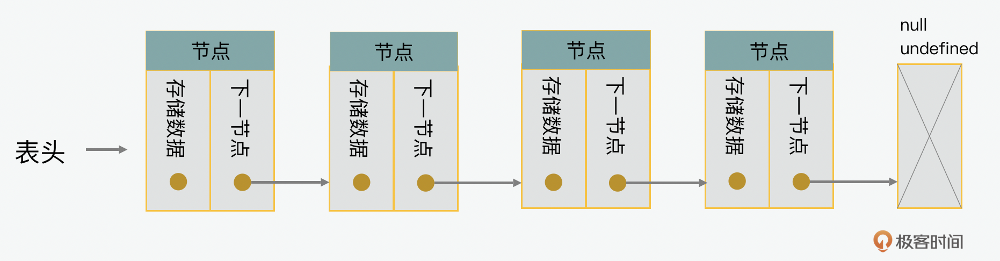
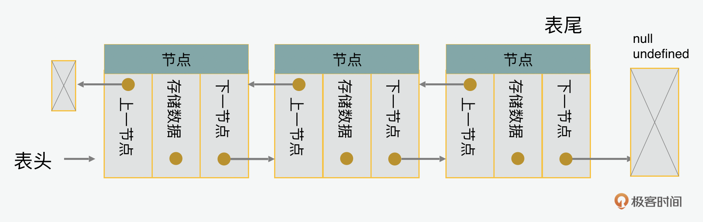
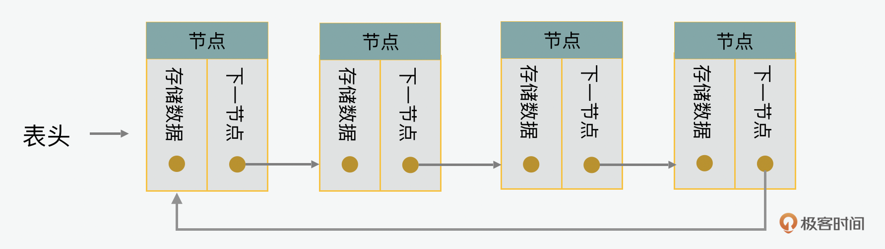
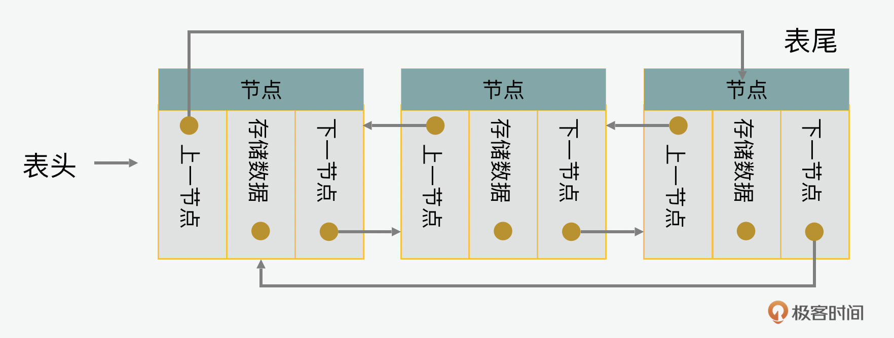
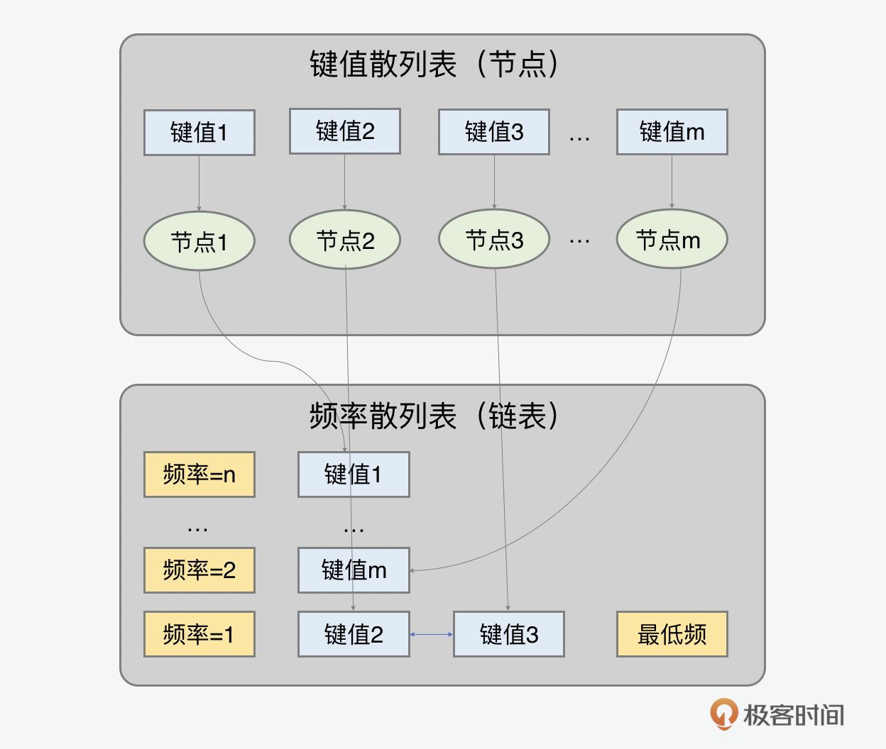
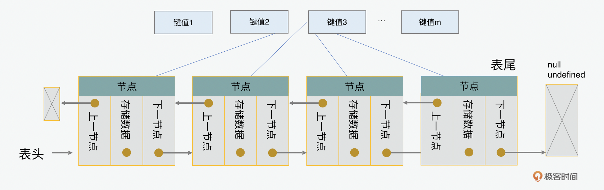

- 00 开篇词 JavaScript的进阶之路.md
- 01 函数式vs.面向对象：响应未知和不确定.md
- 02 如何通过闭包对象管理程序中状态的变化？.md
- 03 如何通过部分应用和柯里化让函数具象化？.md
- 04 如何通过组合、管道和reducer让函数抽象化？.md
- 05 map、reduce和monad如何围绕值进行操作？.md
- 06 如何通过模块化、异步和观察做到动态加载？.md
- 07 深入理解对象的私有和静态属性.md
- 08 深入理解继承、Delegation和组合.md
- 09 面向对象：通过词法作用域和调用点理解this绑定.md
- 10 JS有哪8种数据类型，你需要注意什么？.md
- 11 通过JS引擎的堆栈了解闭包原理.md
- 12 JS语义分析该用迭代还是递归？.md
- 13 JS引擎如何实现数组的稳定排序？.md
- 14 通过SparkPlug深入了解调用栈.md
- 15 如何通过哈希查找JS对象内存地址？.md
- 16 为什么环形队列适合做Node数据流缓存？.md
- 17 如何通过链表做LRU_LFU缓存？.md
- 18 TurboFan如何用图做JS编译优化？.md
- 19 通过树和图看如何在无序中找到路径和秩序.md
- 20 算法思想：JS中分治、贪心、回溯和动态规划.md
- 21 创建型：为什么说Redux可以替代单例状态管理.md
- 22 结构型：Vue.js如何通过代理实现响应式编程.md
- 23 结构型：通过jQuery看结构型模式.md
- 24 行为型：通过观察者、迭代器模式看JS异步回调.md
- 25 行为型：模版、策略和状态模式有什么区别？.md
- 26 特殊型：前端有哪些处理加载和渲染的特殊“模式”？.md
- 27 性能：如何理解JavaScript中的并行、并发？（上）.md
- 28 性能：如何理解JavaScript中的并行、并发？（下）.md
- 29 性能：通过Orinoco、Jank Busters看垃圾回收.md
- 30 网络：从HTTP_1到HTTP_3，你都需要了解什么？.md
- 31 安全：JS代码和程序都需要注意哪些安全问题？.md
- 32 测试（一）：开发到重构中的测试.md
- 33 测试（二）：功能性测试.md
- 34 测试（三）：非功能性测试.md
- 35 静态类型检查：ESLint语法规则和代码风格的检查.md
- 36 Flow：通过Flow类看JS的类型检查.md
- 37 包管理和分发：通过NPM做包的管理和分发.md
- 38 编译和打包：通过Webpack、Babel做编译和打包.md
- 39 语法扩展：通过JSX来做语法扩展.md
- 40 Polyfill：通过Polyfill让浏览器提供原生支持.md
- 41 微前端：从MVC贫血模式到DDD充血模式.md
- 42 大前端：通过一云多端搭建跨PC_移动的平台应用.md
- 43 元编程：通过Proxies和Reflect赋能元编程.md
- 结束语 JavaScript的未来之路：源于一个以终为始的初心.md
17 如何通过链表做LRU_LFU缓存？
你好，我是石川。
前面我们在第10-13讲讲过了数组这种数据类型，以及通过它衍生出的栈和队列的数据结构。之后，我们在讲到散列表的时候，曾经提到过一种链表的数据结构。今天，我们就来深入了解下链表和它所支持的相关的缓存算法。链表有很多使用场景，最火的例子当属目前热门的区块链了。它就是用了链表的思想，每一个区块儿之间都是通过链表的方式相连的。在链表结构里，每一个元素都是节点，每个节点有自己的内容和相连的下一个元素的地址参考。
既然我们讲的是JavaScript，还是回到身边的例子，就是缓存。无论是我们的操作系统，还是浏览器，都离不开缓存。我们把链表和散列表结合起来，就可以应用于我们常说的缓存。那这种缓存是如何实现的呢？接下来就先从链表说起吧。
如何实现单双循环链表
单链表
下面我们先来看看一个单向链表是怎么实现的。链表就是把零散的节点（node）串联起来的一种数据结构。在每个节点里，会有两个核心元素，一个是数据，一个是下一个节点的地址，我们称之为后继指针（next）。在下面的例子里，我们先创建了一个节点（node），里面有节点的数据（data）和下一个节点的地址（next）。

在实现上，我们可以先创建一个节点的函数类，里面包含存储数据和下一节点两个属性。
class Node {
constructor(data){
this.data = data;
this.next = null;
}
}
之后，我们再创建一个链表的函数类。在链表里，最常见的方法就是头尾的插入和删除，这几项操作的复杂度都是\(O(1)\)。应用在缓存当中的时候呢，通常是头部的插入，尾部删除。但倘若你想从前往后遍历的话，或是在任意位置做删除或插入的操作，那么相应的复杂度就会是\(O(n)\)。这里的重点不是实现，而是要了解链表里面的主要功能。因此我没有把所有代码都贴在这里，但是我们可以看到它核心的结构。
class LinkedList {
constructor(){
this.head = null;
this.size = 0;
}
isEmpty(){ /*判断是否为空*/ }
size() { /*获取链表大小*/ }
getHead() { /*获取链表头节点*/ }
indexOf(element) { /*获取某个元素的位置*/ }
insertAtTail(element) { /*在表尾插入元素*/ }
insertAt(element, index) { /*在指定位置插入*/ }
remove(element) { /*删除某个元素*/ }
removeAt(index) { /*在指定位置删除*/ }
getElementAt(index) { /*根据某个位置获取元素*/ }
removeAtHead(){ /*在表头位置删除元素*/ }
}
注意观察的你，可能会发现，最后一个节点是null或undefined的，那它是做什么的呢？这个是一个哨兵节点，它的目的啊，是对插入和删除性能的优化。因为在这种情况下，插入和删除首尾节点的操作就可以和处理中间节点用同样的代码来实现。在小规模的数据中，这种区别可能显得微不足道。可是在处理缓存等需要大量频繁的增删改查的操作中，就会有很大的影响。
双链表
说完单链表，我们再来看看双链表。在前面单链表的例子里，我们可以看到它是单向的，也就是每一个节点都有下一个节点的地址，但是没有上一个的节点的指针。双链表的意思就是双向的，也就是说我们也可以顺着最后一个节点中关于上一个节点的地址，从后往前找到第一个节点。

所以在双链表节点的实现上，我们可以在单链表基础上增加一个上一节点指针的属性。同样的，双链表也可以基于单链表扩展，在里面加一个表尾节点。对于从后往前的遍历，和从前往后的遍历一样，复杂度都是\(O(n)\)。
class DoublyNode extends Node {
constructor(data, next, prev) {
super(data, next);
this.prev = prev;
}
}
class DoublyLinkedList extends LinkedList {
constructor() {
this.tail = undefined;
}
}
循环链表
我们接下来再来看看循环链表（circular list）。循环链表，顾名思义，就是一个头尾相连的链表。

如果是双向循环列表的话，就是除了顺时针的头尾相接以外，从逆时针也可以循环的双循环链表。

如何通过链表来做缓存
了解了单双循环链表后，现在我们回到题目，那我们如何能通过链表来做缓存呢？我们先了解下缓存的目的。缓存主要做的就是把数据放到临时的内存空间，便于再次访问。比如数据库会有缓存，目的是减少对硬盘的访问，我们的浏览器也有缓存，目的是再次访问页面的时候不用重新下载相关的文本、图片或其它素材。通过链表，我们可以做到缓存。下面，我们会看两种缓存的算法，他们是最近最少使用（LRU，least recently used）和最不经常使用（LFU，least frequently used），简称LRU缓存和LFU缓存。
一个最优的缓存方案应该把最不可能在未来访问的内容换成最有可能被访问的新元素。但是在实际情况中，这是不可能的，因为没人能预测未来。所以作为一个次优解，在缓存当中，通常会考虑两个因素，一个是时间局部性（Temporal Locality），我们认为一个最近被访问的内存位有可能被再次访问；另外一个因素是空间局部性(Spatial Locality)，空间局部性考虑的是一个最近被访问的内存位相近的位置也有可能被再次访问。
在实际的使用中，LRU缓存要比LFU的使用要多，你可能要问为什么？这里我先卖个关子，咱们先看看这两种方法的核心机制和实现逻辑。之后我们再回到这个问题。
LFU 缓存
我们先来看看LFU缓存。一个经典的LFU缓存中，有两个散列表，一个是键值散列表，里面存放的是节点。还有一个是频率散列表，里面根据每个访问频率，会有一个双链表，如下图中所示，如果键值为2和3的两个节点内容都是被访问一次，那么他们在频率1下面会按照访问顺序被加到链表中。

在这里，我们看一个LFU关键的代码实现部分的说明。LFU双链表节点，可以通过继承双链表的节点类，在里面增加需要用到的键值，除此之外还有一个计数器来计算一个元素被获取和设置的频率。
class LFUNode extends DoublyNode {
constructor(key) {
this.key = key;
this.freqCount = 1;
}
}
class LFUDoublyLinkedList extends LinkedList {
constructor() {/* LFU 双链表 */ }
}
前面说到一个LFU缓存里面有两个散列表，一个是键值散列表，一个是频率散列表。这两个散列表都可以通过对象来创建。键值散列表保存着每个节点的实例。频率散列表里有从1到n的频率的键名，被访问和设置次数最多的内容，就是n。频率散列表里每一个键值都是一个双向链表。
那围绕它呢，这里有3个比较核心的操作场景，分别是插入、更新和读取。
对于插入的场景，也就是插入新的节点，这里我们要看缓存是否已经满了，如果是，那么在插入时它的频率是1。如果没有满的话，那么新的元素在插入的同时，尾部的元素就会被删除。
对于更新场景，也就是更新旧的节点，这时，这个元素会被移动到表头。同时，为了计算下一个被删除的元素，最小的频率minFreq会减1。
对于读取场景，也就是获取节点的动作，缓存可以返回节点，并且增加它的调用频率的计数，同时将这个元素移动到双链表的头部。同样与插入场景类似，最后一步，最低频率minFreq的值会被调整，用来计算下次操作中会被取代的元素。
class LFUCache {
constructor() {
this.keys = {}; // 用来存储LFU节点的键值散列表
this.freq = {}; // 用来存储LFU链表的频率散列表
this.capacity = capacity; // 用来定义缓存的承载量
this.minFreq = 0; // 把最低访问频率初始设置为0
this.size = 0; // 把缓存大小初始设置为0
}
set() {/* 插入一个节点 */}
get() {/* 读取一个节点 */}
}
LRU 缓存
以上是LFU的机制和核心实现逻辑，下面我们再来看看最近最少使用（LRU least recently used）。LRU缓存的目的是在有限的内存空间中，当有新的内容需要缓存的时候，清除最老的内容缓存。当一个缓存中的元素被访问了，这个最新的元素就会被放到列表的最后。当一个没有在缓存中的内容被访问的时候，最前面的也就是最老的内容就会被删除。

在LRU缓存的实现中，最需要注意的是要追踪哪个节点在什么时间被访问了。为了达到这个目的，我们同样要用到链表和散列表。之所以要用到双向链表，是因为需要追踪在头部需要删除的最老的内容，和在尾部插入最新被访问的内容。
从实现的角度看，LRU当中的节点和LFU没有特别大的差别，也需要一个键值散列表，但是不需要频率散列表。LRU缓存可以通过传入承载量capacity参数来定义可以允许缓存的量。同样和LFU类似的，LRU也需要在链表头部删除节点和链表尾部增加节点的功能。在此基础之上，有着获取和设置的两个对外使用的方法。所以总体看来，LRU的实现和LFU相比是简化了的。
class LRUNode extends DoublyNode {
constructor(key) {
this.key = key;
}
}
class LRUCache {
constructor() {
this.keys = {}; // 用来存储LFU节点的键值散列表
this.capacity = capacity; // 用来定义缓存的承载量
this.size = 0; // 把缓存大小初始设置为0
}
set() {/* 插入一个节点 */}
get() {/* 读取一个节点 */}
}
总结
如果从直觉上来看，你可能会觉得对比LRU，似乎LFU是更合理的一种缓存方法，它根据访问的频率来决定对内容进行缓存或清除。回到上面的问题，为什么在实际应用中，更多被使用的是LRU呢？这是因为一是短时间高频访问本身不能证明缓存有长期价值，二是它可能把一些除了短时间高频访问外的内容挤掉，第三就是刚被访问的内容也很可能不会被频繁访问，但是仍然可能被重复访问，这里也增加了它们被意外删除的可能性。
所以总的来说，LFU没有考虑时间局部性，也就是“最近被访问的可能再次被访问”这个问题。所以在实际的应用中，使用LRU的概率要大于LFU。希望通过这节课，你能对链表和散列表的使用有更多的了解，更主要的是，当你的应用需要写自己的缓存的时候，也可以把这些因素考虑进去。
思考题
下面到了思考题时间，虽然说LFU的应用场景比较少，但是它在某些特定场合还是很有用处的，你能想到一些相关的场景和实现吗？
欢迎在留言区分享你的答案、交流学习心得或者提出问题，如果觉得有收获，也欢迎你把今天的内容分享给更多的朋友。
© 2019 - 2023 Liangliang Lee. Powered by gin and hexo-theme-book.